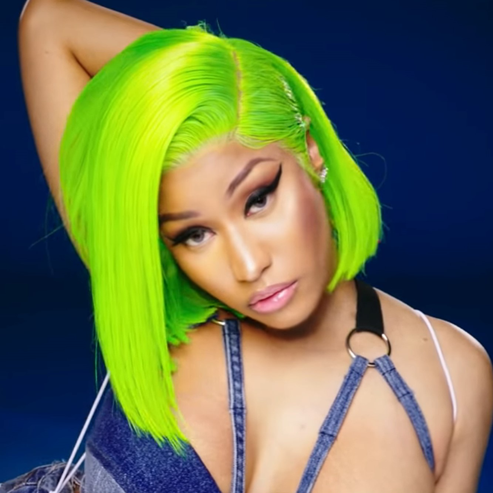

34,250,915 Monthly Listeners

Nicki Minaj
About Artist
With an unmistakable style and charisma, Nicki Minaj skyrocketed into superstardom with a talent that brought to mind past legends but wasn't quite like anything before it. Coming from early days that included shaky attempts at an acting career and being fired from Red Lobster for being rude to customers, Minaj progressed quickly from MySpace demos to nationally adored mixtapes to household-name status, working closely with Drake, Lil Wayne, Kanye West, and virtually every upper-echelon rapper and pop star before ascending to the level of fame that had her selling millions of albums and performing in the Super Bowl halftime show. As a rapper, Minaj was ferocious, known for a unique flow that shifted on a dime from sugary to snarling, with razor-sharp wordplay and mercilessly blunt lyricism. Her range wasn't limited to mixtape fire, however, as her crossover into pop territory yielded some of her most successful work. Her 2010 debut album, Pink Friday, saw the rapper branching out into radio-friendly melodicism and was the first of her albums to sell in the multi-platinum reaches and top chart positions internationally. Establishing herself as more of an iconic presence than an album artist, Minaj released well over 70 singles under her own name in her first decade of recording, and stole the show in guest appearances on countless hits for other artists. Minaj's fame was canonized by stand-alone singles like "Superbass," "Starships," and "Anaconda," all of which were chart-topping smash hits with stream counts in the hundreds of millions. As one of the most successful rappers as well as crossover pop stars of her age, Minaj stands in a lineage that includes Jay-Z, Missy Elliot, Drake, Beyoncé, and others who made impressions the world over.
Nicki Minaj was born Onika Tanya Maraj in 1982. Born in Saint James, Trinidad and Tobago to parents who were both gospel singers, she lived with her grandmother in Saint James until the age of five, when she joined her mother, who had relocated to Queens, New York. In high school she discovered the performing arts, setting her sights on acting as her main pursuit. She eventually transitioned more into music, working as part of a group called the Hood$tars in the early 2000s before branching off solo. In 2007 she was discovered by Dirty Money Entertainment CEO Big Fendi, who happened upon her demos on MySpace and signed Maraj to the label. At Fendi's suggestion, Maraj took on the stage name Nicki Minaj, jumbling her last name to reflect a more ruthless persona. Dirty Money Entertainment released both her 2007 debut mixtape, Playtime Is Over, and its 2008 follow-up, Sucka Free. Industry buzz was already surrounding Minaj on her earliest releases, and these mixtapes already featured guest appearances from stars like Lil Wayne, Gucci Mane, Jadakiss, and Lil' Kim.
The 2009 mixtape Beam Me Up Scotty was a favorite among a growing fan base, and also included her first songs to hit the Billboard charts. In August of 2009 Minaj signed to Lil Wayne's Young Money Entertainment, becoming the label's first female artist. The floodgates opened from there, as Minaj made cameo appearances on tracks from Gucci Mane, Kanye West, Pusha T, and others as well as offering verses to hits like "Bedrock" and "Roger That" from the 2009 Young Money collaborative album We Are Young Money. An official non-mixtape debut album came in the form of Pink Friday, released in November of 2010 but preceded by the hit singles "Your Love" and "Check It Out." The album saw her leaning more into a pop style than the hard-edged rap of her mixtapes, but the hybrid of the two proved immediately successful, and the album debuted at number two on the Billboard 200 and went platinum, selling upwards of 375,000 copies during its first week alone. She earned a handful of 2011 Grammy nominations, including Best New Artist, Best Rap Album, and Best Rap Performance. An all-out media blitz followed between albums, with extravagant performances at award shows across the globe, an appearance as a musical guest on Saturday Night Live, and joining Madonna -- alongside M.I.A. -- for her Super Bowl XLVI halftime show.
In early 2012, the Euro-dance-influenced single "Starships" signaled the coming of her official sophomore effort, Pink Friday: Roman Reloaded, an album built around her devil-may-care alter ego "Roman Zolanski." Guest artists included Nas, Lil Wayne, Rick Ross, Chris Brown, and Beenie Man, while production came from the likes of RedOne and Ke'Noe. The album hit number one on the U.S. album charts, driven by a Top Ten showing for "Starships," and "Va Va Voom" also reached the Top 40. By the end of 2012, Minaj had been announced as a judge for the 12th season of American Idol, although she left at the end of the season. It hardly affected her success, as she set two career records during 2013: the most-charted female rapper in the history of Billboard's singles chart, and the first person to win Best Female Hip-Hop Artist at the BET Awards four times in a row.
She then announced her third studio album, The Pinkprint, which appeared at the end of 2014. First single "Lookin Ass" was also featured on the Young Money compilation Rise of an Empire released in March of that year, while follow-up "Anaconda" was nominated for Best Rap Song at the 2015 Grammy Awards. Filled with songs about guilt and failed relationships, the album was well received by critics and debuted at number two on the U.S. Billboard 200 chart. Throughout 2016, Minaj guested on numerous singles, including DJ Khaled's "Do You Mind" and Ariana Grande's "Side to Side," and she also released her own "Black Barbies." In 2017, Minaj issued a trio of stand-alone singles: "Regret in Your Tears," "Changed It" with Lil Wayne, and "No Frauds" with Lil Wayne and Drake. The latter track went gold and broke into the Top 20 of the Hot 100 and Top Ten of the R&B and rap charts. That year, she also appeared on the Migos track "MotorSport" with Cardi B and on Jason Derulo's "Swalla" with Ty Dolla $ign. She returned with the singles "Chun-Li" and "Barbie Tingz" in spring 2018, paving the way for her fourth studio album, Queen, scheduled for an August release that year. Before the album arrived, the single "Bed" featuring Ariana Grande was released to further entice waiting fans. ~ David Jeffries & Fred Thomas, Rovi